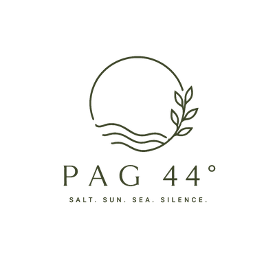

Drago nam je što ste s nama! Želimo vam ugodan i nezaboravan boravak.
WhatsApp domaćinuPodaci ostaju samo na vašem uređaju — ne šalju se nikome.
Vodič će se pojaviti kao ikona među vašim aplikacijama i radit će i bez interneta.
Kasniji odlazak moguć na upit, ovisno o raspoloživosti.
Hvala što nam pomažete da ovo ostane predivno mjesto za sve. Želimo vam nezaboravan boravak na Pagu! ♡
Plaže uz mjesto povezuje ~1 km šetnice uz more — savršena za jutarnju šetnju ili trčanje.
Sve staze, karte i outdoor ponuda otoka na jednom mjestu:
Lito u Povljani 2026. — ljetni program kulturnih, glazbenih i zabavnih događanja.
Izvor i moguće izmjene programa: povljana.hr
Pag zovu "Mjesečev otok" — bura s Velebita i posolica stvorili su krajolik kakav ne postoji nigdje drugdje na Jadranu. Iz tog kamena dolaze sol, sir, janjetina i čipka po kojima je otok poznat u svijetu.
Domaći proizvodi iz Povljane — za kontakt i preporuku slobodno pitajte domaćina:
Želite domaći sir, vino ili maslinovo ulje? Javite nam se — rado ćemo vam organizirati dostavu ovdje kod nas. WhatsApp ›
Kušanja i kupnja na otoku Pagu:
PAG 44° — geografska širina na kojoj se susreću sol, sunce, more i tišina.
Otok Pag leži na 44. paraleli — istoj geografskoj širini kao Bordeaux, pijemontske Langhe i Provansa. Paralela vina, maslina i dobrog života; na njenom jadranskom kraju, između Velebita i otvorenog mora: Pag.
Salt · Sun · Sea · Silence
44°26′ N — 15°03′ E